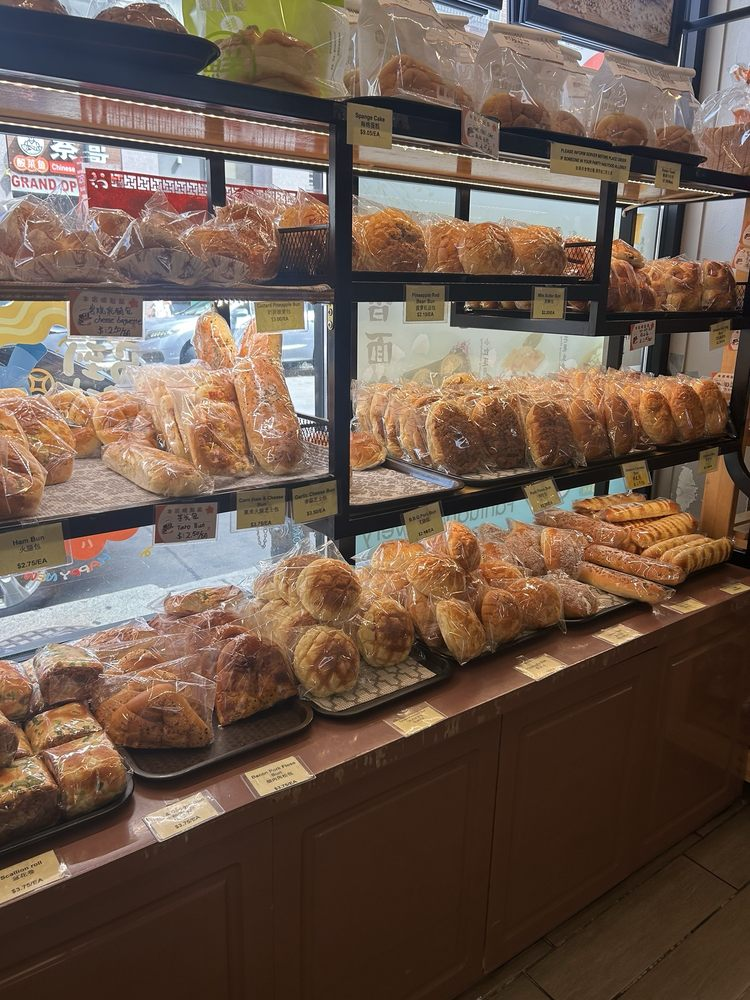
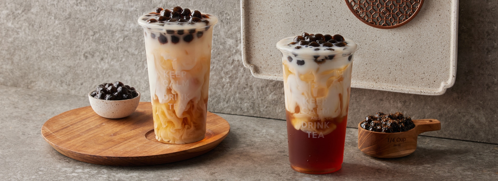
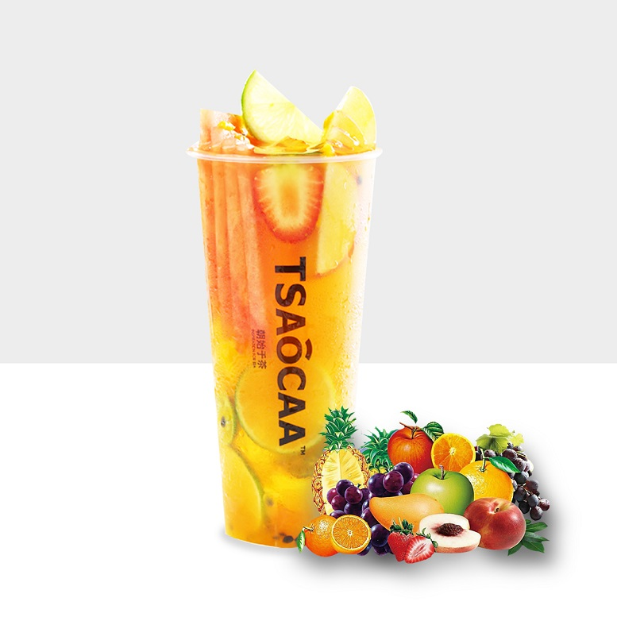

My Favorite Spots in Chinatown
These are the places I keep coming back to in Chinatown. Some of them I return to for one specific dish, like the sauerkraut fish at Nai Brother or the niku miso mazesoba at Kajiken. Others are where I go when I want something quick and comforting, like a bowl of rice noodles at 10 Second or a sashimi don at Tora, which is great value for the price. Dynasty and Empire Garden are my picks for dim sum. I call them my hidden gems because they are the kind of places you might not notice unless someone tells you about them. Then there are the tea shops: HeyTea, Molly Tea, Teazzi, and Tsaocaa, where grabbing a drink after a meal has become part of my routine. Below you can find my full list, photos of what I usually order, and a chart of how much I spend at each place.
Where I Go
- Nai Brother (奈哥) (restaurant): my go-to for sauerkraut fish
- 10 Second (restaurant): rice noodles, usually in bone broth or the green peppercorn flavor
- Tora (restaurant): one of the best spots for sashimi don, and very good for the price
- Kajiken (restaurant): niku miso mazesoba
- Dynasty and Empire Garden (dim sum): my hidden gems, where I usually order:
- char siu bao (BBQ pork buns)
- har gow (shrimp dumplings)
- shumai
- cheung fun (rice noodle rolls)
- water chestnut cake
- steamed spare ribs
- Molly Tea (tea shop): White Champaca milk tea
- HeyTea (tea shop): Mango Grapefruit Boom
- Teazzi (tea shop): Honey Amber Oolong milk tea
- Tsaocaa (tea shop): Colorful Fruit reen tea
- Corner Bakery (bakery): pineapple buns, savory filled breads, and sometimes cake
What I Order







Photos from each shop's website or online menu.
How Much I Usually Spend
Each bar shows the midpoint of what I usually spend per person, and the dark line shows the full range. Nai Brother is usually shared between two people, so its price is split per person.
Looking at my spending, Chinatown is easier on the wallet than I expected. All four tea shops and the bakery cost $15 or less, so a quick drink or snack is an easy treat. The noodle and Japanese spots sit in the middle at around $15 to $30. Dim sum at Dynasty and Empire Garden is the most expensive at $30 to $40 per person, which makes it more of a weekend outing than an everyday meal.